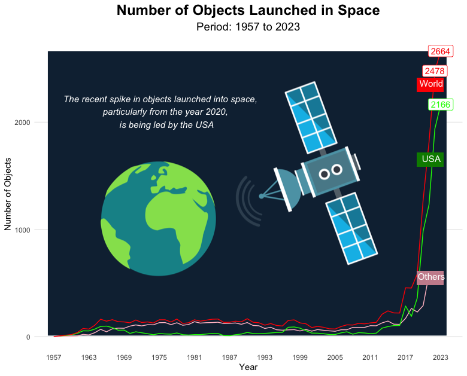

Loading Libraries
library(tidyverse)
library(ggrepel)
library(gganimate)
library(jpeg)
library(grid)
library(png)
library(av)23rd April 2024
Arun Koundinya Parasa
May 8, 2024
This particular visualization is done on R to visualize the data in an animation. Finally, was successful by creating a movie plot where users can pause and see a particular version of plot. Plots are annotated with key findings inside the plot.
# Creating Seperate dataframe for entities
entities = subset(outer_space_objects,is.na(outer_space_objects$Code))
# Creating Seperate dataframe for Countries
countries = subset(outer_space_objects,outer_space_objects$Entity!= "World" & !(is.na(outer_space_objects$Code)))
# Creating a consistent color coding for Countries
# List of countries
countrynames <- c(
"Algeria", "Angola", "Argentina", "Armenia", "Australia",
"Austria", "Azerbaijan", "Bangladesh", "Belarus", "Belgium",
"Bhutan", "Bolivia", "Brazil", "Bulgaria", "Canada",
"Chile", "China", "Colombia", "Costa Rica", "Czechia",
"Denmark", "Djibouti", "Ecuador", "Egypt", "Estonia",
"Ethiopia", "Finland", "France", "Germany", "Ghana",
"Greece", "Guatemala", "Hungary", "India", "Indonesia",
"Iran", "Ireland", "Israel", "Italy", "Japan",
"Jordan", "Kazakhstan", "Kenya", "Kuwait", "Laos",
"Latvia", "Lithuania", "Luxembourg", "Malaysia", "Mauritius",
"Mexico", "Moldova", "Monaco", "Mongolia", "Morocco",
"Nepal", "Netherlands", "New Zealand", "Nigeria", "North Korea",
"Norway", "Pakistan", "Papua New Guinea", "Paraguay", "Peru",
"Philippines", "Poland", "Portugal", "Qatar", "Romania",
"Russia", "Rwanda", "Saudi Arabia", "Singapore", "Slovakia",
"Slovenia", "South Africa", "South Korea", "Spain", "Sri Lanka",
"Sweden", "Switzerland", "Taiwan", "Thailand", "Tunisia",
"Turkey", "Turkmenistan", "Uganda", "Ukraine", "United Arab Emirates",
"United Kingdom", "United States", "Uruguay", "Venezuela", "Vietnam",
"Zimbabwe"
)
# List of manually selected unique color hex codes
color_hex_codes <- c(
"#FF5733", "#C70039", "#900C3F", "#581845", "#FFC300",
"#FF5734", "#C7003A", "#900C40", "#581846", "#FFC301",
"#FF5735", "#C7003B", "#900C41", "#581847", "#FFC302",
"#FF5736", "#C7003C", "#900C42", "#581848", "#FFC303",
"#FF5737", "#C7003D", "#900C43", "#581849", "#FFC304",
"#FF5738", "#C7003E", "#900C44", "#58184A", "#FFC305",
"#FF5739", "#C7003F", "#900C45", "#58184B", "#FFC306",
"#FF573A", "#C70040", "#900C46", "#58184C", "#FFC307",
"#FF573B", "#C70041", "#900C47", "#58184D", "#FFC308",
"#FF573C", "#C70042", "#900C48", "#58184E", "#FFC309",
"#FF573D", "#C70043", "#900C49", "#58184F", "#FFC30A",
"#FF573E", "#C70044", "#900C4A", "#581850", "#FFC30B",
"#FF573F", "#C70045", "#900C4B", "#581851", "#FFC30C",
"#FF5740", "#C70046", "#900C4C", "#581852", "#FFC30D",
"#FF5741", "#C70047", "#900C4D", "#581853", "#FFC30E",
"#FF5742", "#C70048", "#900C4E", "#581854", "#FFC30F",
"#FF5743", "#C70049", "#900C4F", "#581855", "#FFC310",
"#FF5744", "#C7004A", "#900C50", "#581856", "#FFC311",
"#1F5745", "#C7004B", "#900C51", "#581857", "#C7004B",
"#FF5746"
)
# Create a data frame with countries and their corresponding color codes
country_colors_df <- data.frame(Country = countrynames, Color = color_hex_codes)
# Merging to the orignal dataframe
countries<- merge(countries,country_colors_df,by.x = "Entity",by.y = "Country",all.x = TRUE)
# removing the values created
rm(country_colors_df,countrynames,color_hex_codes)# Plot1 - Line Graph with background image
bg_image <- readPNG("satellite.png")
bg_image <- rasterGrob(bg_image, interpolate=TRUE)
outer_space_objects <-
rbind(
outer_space_objects |>
filter(
Entity %in% c("World","United States")
) |>
select(
c("Year","Entity","num_objects")
) ,
outer_space_objects |>
filter(
!(Entity %in% c("World","United States"))
) |>
select(
c("Entity","Year","num_objects")
) |>
group_by(Year) |>
summarise(Entity = "Rest of World",num_objects = sum(num_objects), .groups = "drop")
)
outer_space_objects <- outer_space_objects |>
mutate(
Year = as.Date(paste("01/01/",outer_space_objects$Year,sep=""),"%d/%m/%Y")
)
outer_space_objects |>
ggplot(aes(x = Year, y = num_objects, color = Entity)) +
annotation_custom(
bg_image, xmin = as.Date("1956-01-01"), xmax = as.Date("2023-12-31"), ymin = 0,
ymax = max(outer_space_objects$num_objects)+10
) +
geom_line() +
geom_label(data = subset(outer_space_objects,outer_space_objects$num_objects>2000),
aes( label = num_objects)) +
scale_color_manual(values = c("pink", "green", "red")) +
scale_x_date(breaks = seq(from = as.Date("1957-01-01"),
to = as.Date("2023-01-01"),
by = "6 years"),
date_labels = "%Y") +
theme_minimal() +
labs (
x = "Year",
y = "Number of Objects",
title = "Number of Objects Launched in Space",
subtitle = "Period: 1957 to 2023"
) +
theme (
legend.position = "none",
panel.grid.minor.y = element_blank(),
panel.grid.minor.x = element_blank(),
panel.grid.major.x = element_blank(),
plot.title = element_text(hjust = 0.5, size = 18, face = "bold"),
plot.subtitle = element_text(hjust = 0.5, size = 14)
) +
geom_rect(aes(xmin = as.Date("2019-01-01"), xmax = as.Date("2023-06-01"), ymin = 2290, ymax = 2410),
fill = "red",color = "red", alpha = 0.3) +
annotate(
"text",
x = as.Date("2021-06-01"),
y = 2364,
label = "World",
size = 4,
color = "white"
) +
geom_rect(aes(xmin = as.Date("2019-01-01"), xmax = as.Date("2023-06-01"), ymin = 1590, ymax = 1710),
fill = "green4",color = "green4", alpha = 0.3) +
annotate(
"text",
x = as.Date("2021-06-01"),
y = 1663,
label = "USA",
size = 4,
color = "white"
)+
geom_rect(aes(xmin = as.Date("2019-01-01"), xmax = as.Date("2023-06-01"), ymin = 490, ymax = 610),
fill = "pink3",color = "pink3", alpha = 0.3) +
annotate(
"text",
x = as.Date("2021-06-01"),
y = 563,
label = "Others",
size = 4,
color = "white"
)+
annotate(
"text",
x = as.Date("1975-06-01"),
y = 2100,
label = "The recent spike in objects launched into space,
particularly from the year 2020,
is being led by the USA",
size = 4,
color = "white",
fontface = "italic"
)
# Plot 2 Bar Plot by Entities
entities |>
group_by(Entity) |>
summarise(num_objects = sum(num_objects), .groups = "drop") |>
arrange(desc(num_objects)) |>
ggplot(aes( x = reorder(Entity, num_objects))) +
geom_bar(aes(y=num_objects),stat = "identity", fill = "cornsilk4") +
geom_label(aes(x = reorder(Entity, num_objects), y = num_objects, label = num_objects), size = 3, color = "black", hjust = -0.1) +
coord_flip() +
theme_minimal() +
labs (
y = "Number of Objects",
x = "Entities",
title = "Number of Objects Launched in Space by Entities",
subtitle = "Period: 1957 to 2023"
) +
theme (
legend.position = "none",
panel.grid.minor.y = element_blank(),
panel.grid.minor.x = element_blank(),
panel.grid.major.y = element_blank(),
plot.title = element_text(hjust = 0.5, size = 18, face = "bold"),
plot.subtitle = element_text(hjust = 0.5, size = 14)
) +
annotate(
"text",
x = "NATO",
y = 60,
label = "Total objects launched into space during the period,
is being led mostly by Europe",
size = 4,
color = "darkred",
fontface = "italic"
)# Plot 3 Bar Plot for top 15 countries
top15countries <-
countries |>
group_by(Entity,Color) |>
summarise(num_objects = sum(num_objects), .groups = "drop") |>
arrange(desc(num_objects)) |>
head(15)
col <- as.character(top15countries$Color)
names(col) <- as.character(top15countries$Entity)
top15countries |>
ggplot(aes( x = reorder(Entity, num_objects))) +
geom_bar(aes(y=num_objects, fill = Entity),stat = "identity") +
geom_label(aes(x = reorder(Entity, num_objects), y = num_objects, label = num_objects), size = 3, color = "black", hjust = -0.1) +
coord_flip() +
theme_minimal() +
labs (
y = "Number of Objects",
x = "Entities",
title = "Number of Objects Launched in Space by top 15 Countries",
subtitle = "Period: 1957 to 2023"
) +
theme (
legend.position = "none",
panel.grid.minor.y = element_blank(),
panel.grid.minor.x = element_blank(),
panel.grid.major.y = element_blank(),
plot.title = element_text(hjust = 0.5, size = 18, face = "bold"),
plot.subtitle = element_text(hjust = 0.5, size = 14)
) +
scale_fill_manual(values = col)# Plot 4 Bar Plot animation
plot_racing_barplot <- function(countries, year, annotation_text = NULL) {
data <- countries[countries$Year == year, ]
data <- data[order(-data$num_objects), ]
col <- as.character(data$Color)
names(col) <- as.character(data$Entity)
p <- ggplot(data, aes(x = Entity)) +
geom_bar(aes(y = num_objects, fill = Entity), stat = "identity", width = 0.5) +
coord_flip() +
theme_minimal() +
labs (
y = "Number of Objects",
x = "Countries",
title = "Number of Objects Launched in Space by Entities",
subtitle = paste("Year:",year)
) +
geom_label(aes(x = reorder(Entity, num_objects), y = num_objects, label = num_objects), size = 3, color = "black", hjust = -0.1) +
theme (
legend.position = "none",
panel.grid.minor.y = element_blank(),
panel.grid.minor.x = element_blank(),
panel.grid.major.y = element_blank(),
plot.title = element_text(hjust = 0.5, size = 20, face = "bold"),
plot.subtitle = element_text(hjust = 0.5, size = 16),
axis.title.x = element_text(size = 16),
axis.title.y = element_text(size = 16),
axis.text.x = element_text(size = 12),
axis.text.y = element_text(size = 12)
) +
scale_fill_manual(values = col)
# Calculate dynamic annotation positions
annotation_x <- 1
annotation_y <- nrow(data) + max(data$num_objects) - max(data$num_objects)/2
if(year == 1957){
annotation_y = 1
}
if (nrow(data)>3){
annotation_x <- 2
}
if (nrow(data)>4){
annotation_x <- 3
annotation_y <- nrow(data) + max(data$num_objects) - max(data$num_objects)/3
}
if (nrow(data)>6){
annotation_x <- 4
annotation_y <- max(data$num_objects)/2
}
# Add annotations if provided
if (!is.null(annotation_text)) {
p <- p + annotate(geom = "text", x = annotation_x, y = annotation_y, label = annotation_text, vjust = 1, hjust = 0,
color = "darkred",
size = 5)
}
return(p)
}
years <- 1957:2023
annotation_texts <- c("1957" = "Russia is the only country",
"1958" = "USA Joined the party",
"1959" = "USA and Russia are enjoying",
"1960" = "USA and Russia are enjoying",
"1961" = "USA consistently at top",
"1962" = "UK & Canada Joined the Launch party",
"1963" = "USA & Russia head on head",
"1964" = "USA & Russia still head on head\nItaly joined",
"1965" = "USA & Russia fighting for space control,\nFrance opened its account",
"1966" = "Russia & USA competition",
"1967" = "Russia & USA Stiff competition,\nAustralia opened its account",
"1968" = "Russia & USA head on head",
"1969" = "Russia overtook USA after 11 years, \nGermany joined the party",
"1970" = "Russia is fierce , \nJapan and China joined the party",
"1971" = "Russia is aggresive",
"1972" = "USA giving tough competition",
"1973" = "Russia is still aggresive",
"1974" = "Russia is way dominating, \n Netherlands launched their first",
"1975" = "Russia is still aggresive, \n India launched their first!!!",
"1976" = "Russia is still aggresive, \n Indonesia launched their first!",
"1977" = "Russia is still aggresive",
"1978" = "Russia is still aggresive",
"1979" = "Russia is still aggresive",
"1980" = "Russia is still aggresive, \n US seems shifted their focus",
"1981" = "Russia is still incredible",
"1982" = "Russia is still aggresive",
"1983" = "Russia is still incredible",
"1984" = "Russia is still incredible, \n US still the second major compared to ROW ",
"1985" = "Russia is still aggresive, \n Mexico and Brazil launched their first ",
"1986" = "Russia is very aggresive, \n Sweden launched their first",
"1987" = "Russia is very aggresive, \n US slowing down",
"1988" = "Russia is very aggresive, \n Luxembourg & Isreal launched their first",
"1989" = "Russia is very aggresive, \n US has reversed their trend now \n Czechia launched their first",
"1990" = "USA and Russia are head on head, \n Argentina & Pakistan launched their first",
"1991" = "USA is the second largest still",
"1992" = "USA is the second largest still. \n Spain and Sourth Korea launched their first",
"1993" = "USA and Russia are head on head, \n Thailand, Portugal and Mexico launched their first",
"1994" = "USA and Russia are head on head",
"1995" = "USA became aggressive",
"1996" = "USA became aggressive, \n Malaysia launched their first",
"1997" = "USA doubled its launches, \n Sweden, Philippines, Spain \n Normay launched their first",
"1998" = "USA became aggressive. \n China trying to increase its space count. \n Egypt, Singapore and Chile \n launched their first",
"1999" = "USA tops.Russia slowing down \n China is increasing its pace. \n Taiwan and Denmark \n launched their first",
"2000" = "USA is very aggressive compared to rest, \n Saudi Arabia & UAE launched their first",
"2001" = "USA slowed down considering its situation at that time. \n Turkey launched their first",
"2002" = "USA slowed down considering its situation at that time. \n Algeria launched their first",
"2003" = "Nigeria launched their first.\n China and Japan are head on head \n for 3rd and 4th spot",
"2004" = "Absolute is on decreasing trend because of fewer launches by USA.\n Ukrain launched their first",
"2005" = "",
"2006" = "China and Japan increased their pace. \n Kaakhstan launched their first",
"2007" = "USA is back to its pace, \n Columbia launched their first",
"2008" = "China increased their pace. \n Venezuela and Vietnam launched their first",
"2009" = "South Africa and Switzerland launched their first",
"2010" = "China increasing its pace",
"2011" = "USA increasing its pace",
"2012" = "USA increasing its pace",
"2013" = "USA leads. \n China and Russia are spotting for 2nd",
"2014" = "More number of countries are launching every year",
"2015" = "China over takes Russia",
"2016" = "USA is still aggresive, \n China increasing its space.\n India trying for 3rd spot",
"2017" = "USA is more aggresive",
"2018" = "USA is very aggresive. \n China is second.\n no other country nearby",
"2019" = "USA is very aggresive. \n China is second.\n no other country nearby",
"2020" = "USA is very aggresive. \n UK for the first time became aggresive.",
"2021" = "USA is exponentially aggresive. \n UK and China are comparitvely aggresive.",
"2022" = "USA is exponentially aggresive. \n UK and China are comparitvely aggresive.",
"2023" = "USA is exponentially aggresive. \n UK and China are comparitvely aggresive."
)
plot_list <- list()
for (year in years) {
annotation_text <- annotation_texts[as.character(year)]
plot_list[[year]] <- plot_racing_barplot(countries, year, annotation_text)
}
animation::saveGIF(
expr = {
for (i in seq_along(plot_list)) {
print(plot_list[[i]])
}
},
movie.name = "racing_barplot_animation.gif",
interval = 4,
ani.width = 1200,
ani.height = 700,
res = 300,
ani.bg = "white",
ani.fps = 10
)
av_encode_video(
input = "racing_barplot_animation.gif",
output = "racing_barplot_animation.mp4",
framerate = 1
)